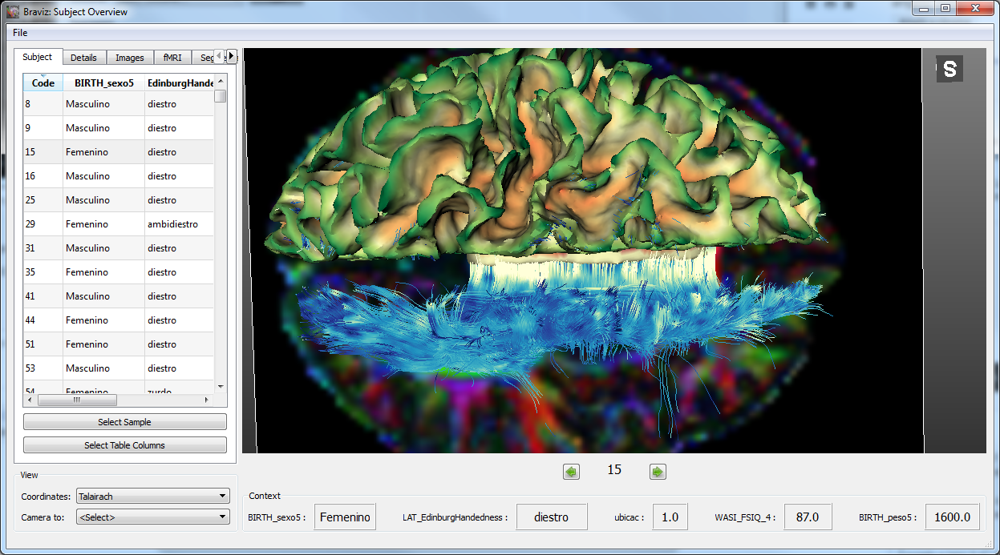
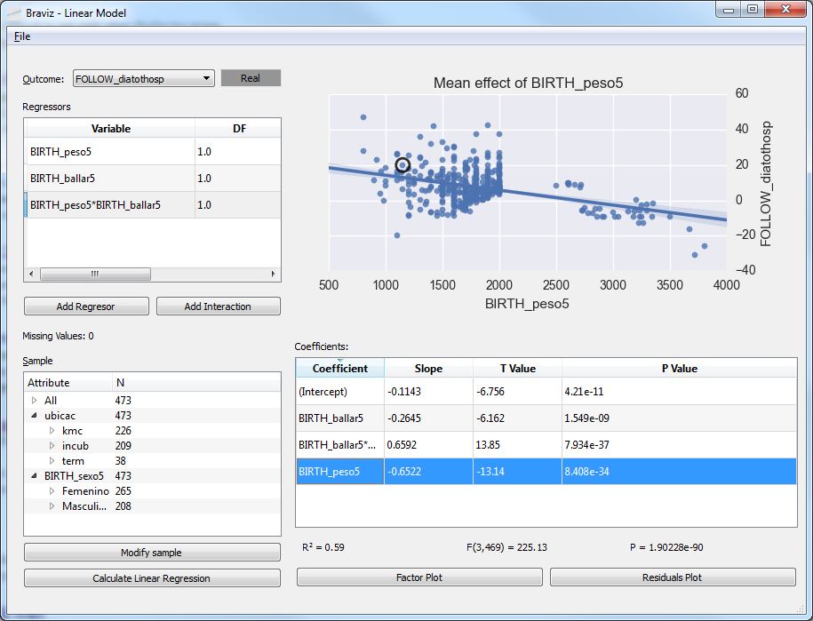

Applications¶
The applications module is where all end-user applications live. Python files in this modules should be executable. This module also contains the configuration files used in braviz.readAndFilter.config_file.
This page will contain an overview of the scripts located in this module and some guidelines on creating new applications. For documentation from the user point of view please look at
Graphical applications¶
Visualize geometry¶
Subject Overview¶
Visualize geometrical data from a single subject with tabular data as context.
See User documentation.
Sample Overview¶

The sample_overview application can load geometric data for several subjects in the same display. Visualizations are created as scenarios in the subject overview application. They are arranged in rows with respect to a nominal variable and sorted from left to right with respect to a real variable.
See User documentation.
Explore fMRI¶

This application specializes in fMRI data. It shows a timeline with the experiment design and the raw bold signal at the bottom.
See User documentation.
Check Registration¶

Compare two images in order to check if a registration algorithm was successful or to compare images from different subjects.
See User documentation.
Create geometry¶
ROI Builder¶

Position spherical ROIs in the different subjects. Sphere positions and size can be interpolated using one of the common spaces as intermediate stop. Images and cortical surfaces can be used as guides to position the sphere. Fibers and scalar values inside the sphere are shown to the user.
See User documentation.
Logic bundles¶

Define new fiber bundles based on ROIs, segmented structures and logical operations.
See User documentation.

Statistics¶
Anova¶

Fit anova regressions, and visualize the results, based on the variables in the database. It uses rpy2 to connect with the R statistical software where the actual calculation takes place.
See User documentation.
Linear Model¶
Fit linear models and visualize the results, with the database variables. Variable normalization and model fitting are done in R via rpy2.
See User documentation.

{kind=link}
{kind=link}
Parallel Coordinates¶

Explore relationships among several variables using a parralel coordinates display.
See User documentation.
Utilities¶
Command line applications¶
Parse spss files¶
Access an spss *.sav file to read variables metadata, specifically
- variable descriptions
- variable types
- nominal variable labels
Notice at the moment it is not possible to read variable values from the spss file; it is necessary to first import the variables using the dialog in the menu. The program should be called as this
python -m braviz.applications.parse_spss_file my_file.sav
To read and show in the screen the descriptions and labels from the file. To save this metadata into the database, use the following form
python -m braviz.applications.parse_spss_file my_file.sav yes
Warning
This will overwrite existing descriptions and labels in the database
Calculate descriptors¶
Calculate geometric descriptors from segmented structures (ASEG only) in all available subjects. The results are saved into a database called descriptors.sqlite in the dynamic data root (see braviz.readAndFilter). The geometric descriptors are
- Volume
- Surface Area
- Length of longest axis
- Length of second longest axis
- Length of third longest axis
All three axes are orthogonal. The output database contains a single table called “descriptors” with columns: subject, structure, volume, area, d1, d2 and d3.
The application takes as argument the number of processes to use in the calculation, for example to split the job on 4 processes use
python -m braviz.applications.calculate_descriptors 4
Populate cache¶
Fill the braviz disk cache (see braviz.readAndFilter.cache) with commonly used data. The script takes as argument the number of processes to use. For example, to use 3 processes call it like
python -m braviz.applications.calculate_descriptors 3
Braviz web server¶
Launches the Tornado web server. It will listen for http requests on port 8100.
Notice that D3 visualization applications like parallel_coordinates will attempt to launch the server process if it is not found. It should not be required to launch it manually.
The server is capable or relying braviz communication messages (see Braviz Inter Application Communication) to web applications.
For compatibility it takes the same arguments as the applications launched from the menu, but ignores the scenario argument.